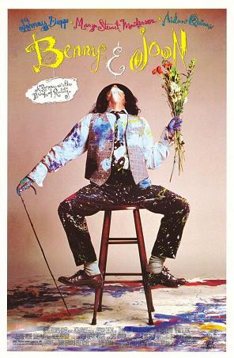

Summary
In a small town, an auto mechanic named Benny is devoted to taking care of his mentally ill sister, Joon, who can barely function alone in the real world despite being a talented artist. This relatively stable situation is shaken up when Benny is obliged in a poker game to welcome another player's relative, Sam, to his home for a few days. When Sam arrives, he quickly makes an impression with his quietly eccentric ways which emulate the antics of the great silent movie comedian, Buster Keaton. Without Benny’s full knowledge, Sam and Joon find themselves drawn to each other to the fullest degree. However when Benny finds out, it creates a rift in the siblings as they struggle to accept their relationship is profoundly changing with the presence of this odd newcomer.
Johnny Depp was nominated for a Golden Globe for his astonishing performance in Benny & Joon, though the entire cast is equally impressive. Benny (Aidan Quinn) runs a small car repair shop. He must also take care of his mentally ill sister Juniper, better known as Joon (Mary Stuart Masterson). After losing a bet, Benny is forced to bring another eccentric into his house: Sam (Johnny Depp), the cousin of a friend. Not inclined to conversation, Sam expresses himself by performing Charlie Chaplin and Buster Keaton routines (and brilliantly!) Not surprisingly, he immediately hits it off with Joon. As Sam and Joon fall deeper in love, Benny for the first time in life experiences the pangs of jealousy. As can be gathered by this synopsis, Benny and Joon may not strike responsive chord with everyone; those who like the film, however, are almost militant in their devotion.
TV Guide's Movie Guide says:
“If the performances were as cute and sweet as the characters, the film would need a warning label. But Depp's Sam is delicately touching, a maladjusted waif with both soul and grit, and Masterson resists the temptation to soften Joon.
Cast Names (top billed)
- Johnny Depp - Sam
- Mary Stuart Masterson - Juniper ‘Joon’ Pearl
- Aiadan Quinn - Benjamin ‘Benny’ Pearl
- Julianne Moore - Ruthie
Lead Actress: Mary Stuart Masterson

With short blonde hair and a lean frame, Mary Stuart Masterson has played many tomboys throughout her acting career. Born to director Peter Masterson and actress Carlin Glynn, she made her film debut in The Stepford Wives at the age of nine. As a teenager, she appeared on Broadway in Alice in Wonderland and played tough girl Dani in Heaven Help Us. She studied anthropology at N.Y.U. and returned to acting in 1987 to star in Some Kind of Wonderful as quintessential ’80s tomboy Watt, her most recognizable role. After appearing with her folks in Francis Ford Coppola’s Gardens of Stone and opposite Robert Downey Jr. in Chances Are, she played a pregnant woman who gives up her baby to Glenn Close and James Woods in Immediate Family. The ’90s saw good roles in successful movies like the ensemble comedy Married to It, the tearjerker Fried Green Tomatoes, and the offbeat romance Benny & Joon. However, she also appeared in some unsuccessful films like the revisionist Western Bad Girls and the sentimental romance Bed of Roses. She then turned to television for a lead in the TV period drama Lily Dale (directed by her father) and her own short-lived series, Kate Brasher. In 2000, she married television director Damon Santostefano and went on to win a Tony for her work in the Broadway musical revival Nine.